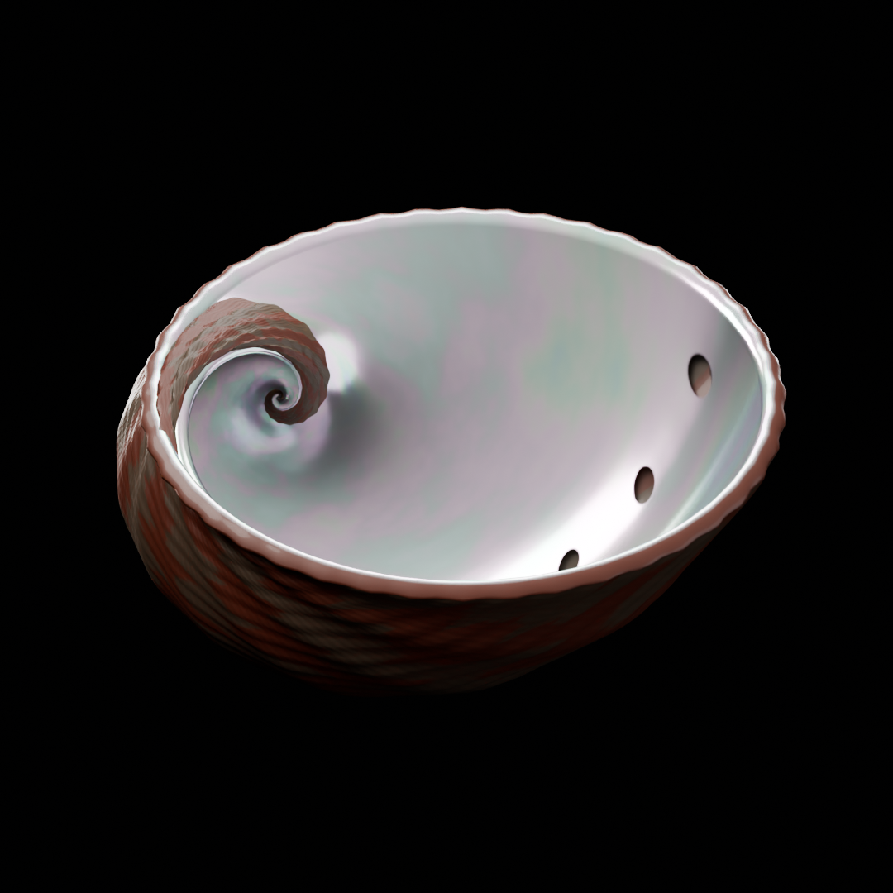
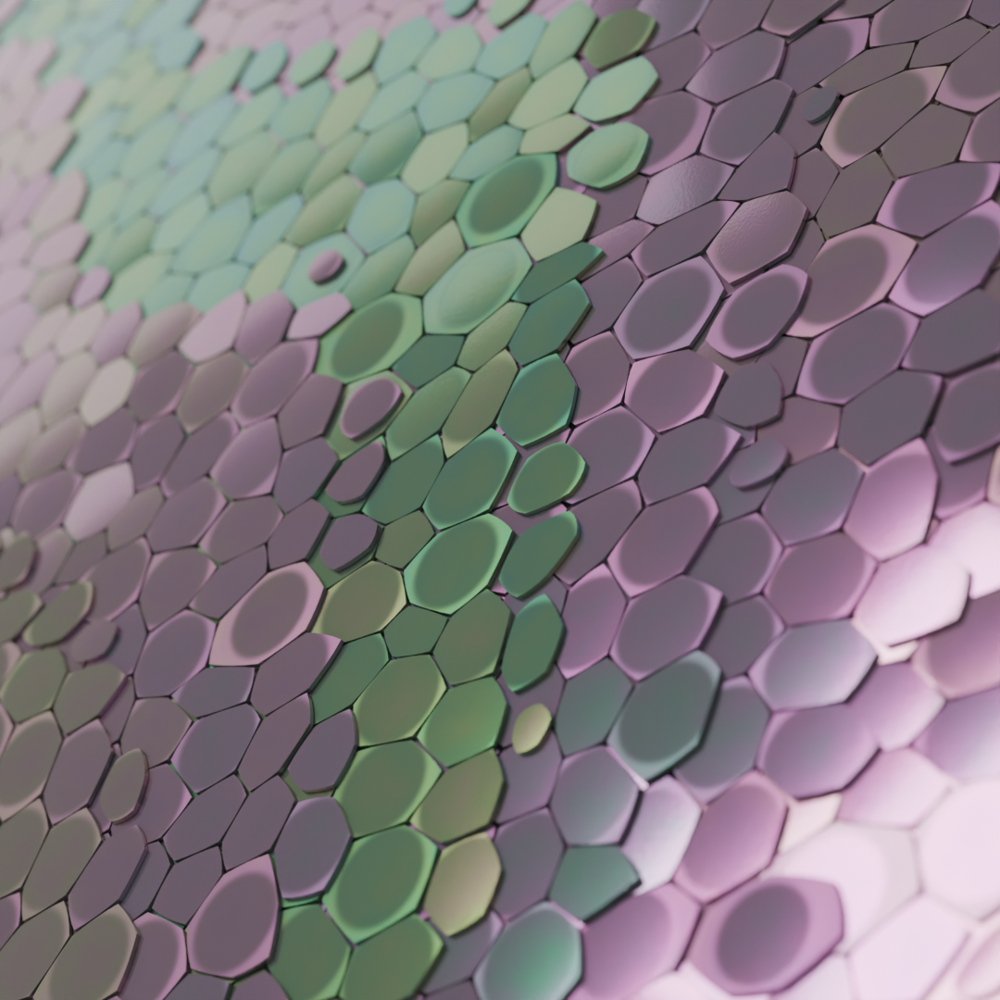
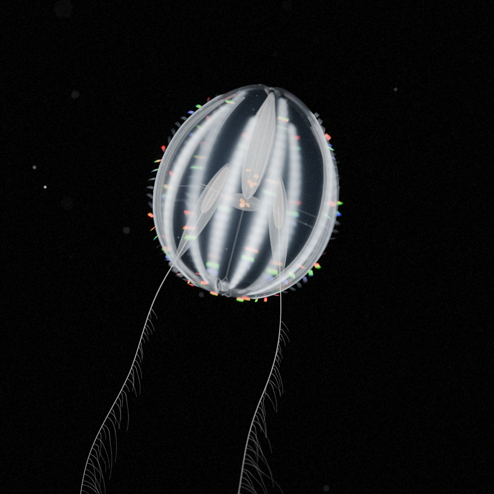
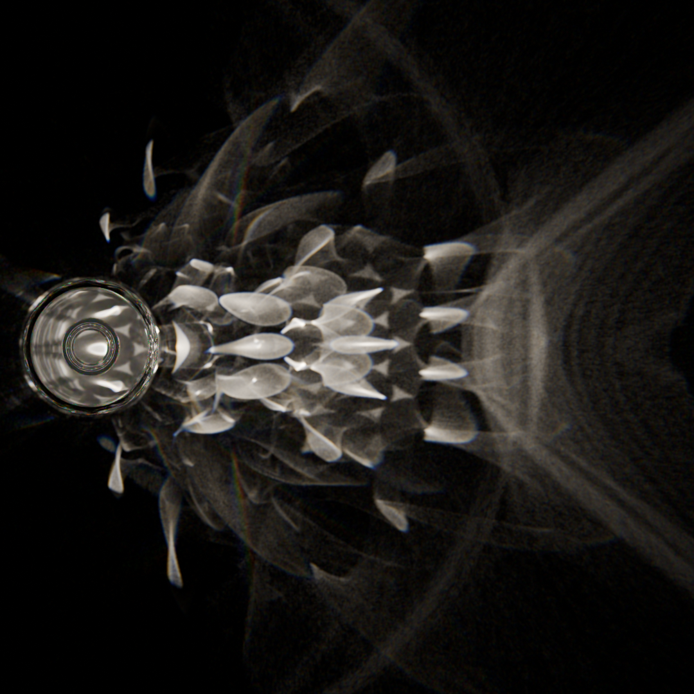
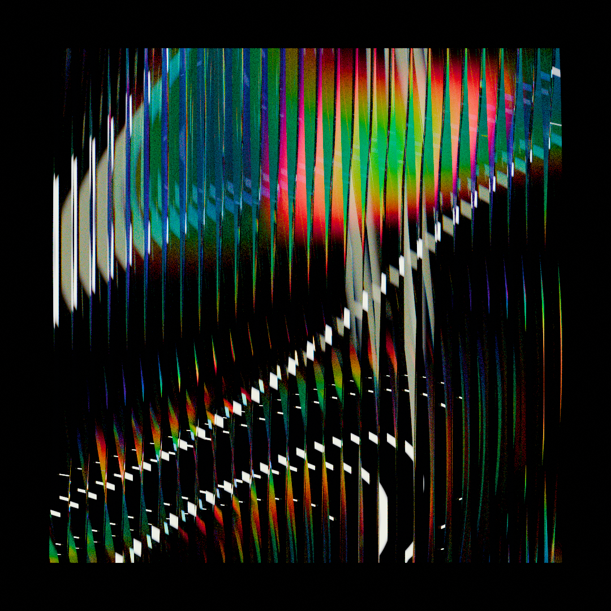
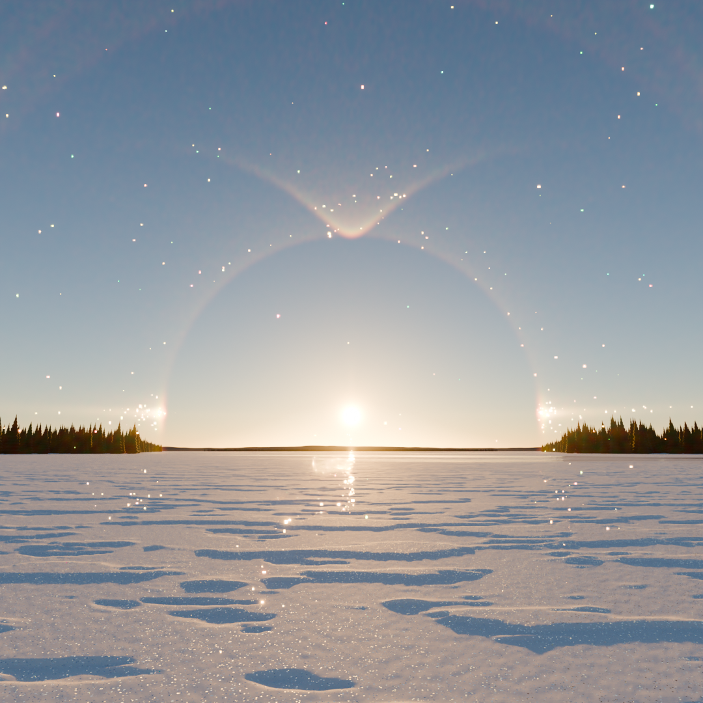
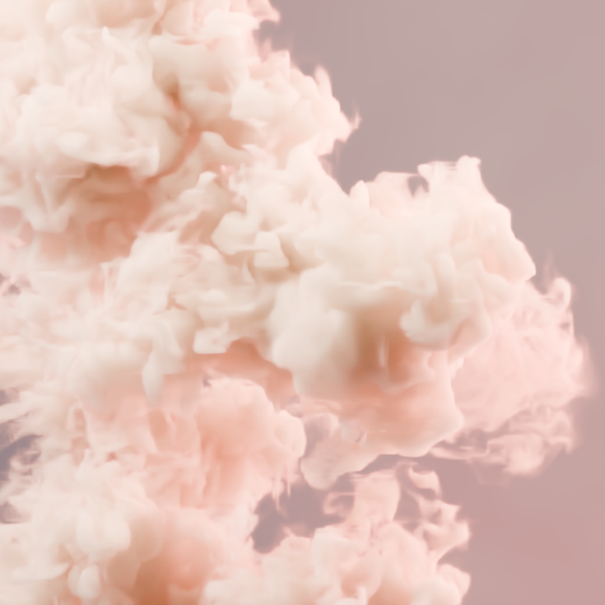

Room 07 · Nodevember · 20 studies · 2026
A prompt
a day.
Twenty entries for Nodevember 2026, the November challenge for node-based art. Every piece is procedural: Blender Geometry Nodes, shader nodes, no image textures, no hand modelling. A separate Codevember archive keeps sixteen WebGL and WebGPU works moved here from Paper.
 01
Loop ↗
01
Loop ↗
Paper plane
OrigamiA sheet of washi paper folds itself into a paper plane and glides off the stack. The sheet underneath is already waiting, so the loop is seamless.
 02
Loop ↗
02
Loop ↗
A day in the corner
FurnitureA reading corner lit by one window. In ten seconds the sun crosses the room, the lamp clicks on at blue hour, the moon comes through, and morning returns.
 03
Loop ↗
03
Loop ↗
Kintsugi
StitchAn old cream tea bowl breaks along its gold seams, then the shards are glued back with black urushi lacquer and gold flows down every crack.
 04
Loop ↗
04
Loop ↗
Chladni
BrassSand on a brass plate finds the nodal lines of four rising tones, then leaps and settles into lace as the frequency changes.
 05
Loop ↗
05
Loop ↗
Four-season music box
ClockworkA wind-up music box whose stage makes one turn per loop, and that turn is one year: snow, blossom, leaf, fruit, leaf-fall, snow.
 06
Loop ↗
06
Loop ↗
Rouen nave
VaultYou lie on the floor of Rouen Cathedral and look up as you walk toward the rose window; the nave slides back one bay per loop.
 07
Loop ↗
07
Loop ↗
After the rain — Supertree
TreeEleven steel trees in an imagined Singapore garden at blue hour. After the rain the garden wakes, light rising tree by tree through the canopies.
 08
Loop ↗
08
Loop ↗
Fingertip
MyceliumA weathered stone hand points one finger at the sky; white hyphae climb the stone and a bonnet mushroom grows on the tip.
 09
Loop ↗
09
Loop ↗
Solo
WingedOne silver maple key spins down through low sun, and the camera falls with it; the key is a single closed surface with real veins.
 10
Loop ↗
10
Loop ↗
Geode generator
GeodeA sawn geode on a black studio floor, and the one Geometry Nodes group that grows it: agate bands, crystal rays and seven sliders.
 11
Loop ↗
11
Loop ↗
Flooded geode canal
CavernousA small boat with a lantern drifts down a chain of giant flooded geodes; each hall is a function of its number alone.
 12
Loop ↗
12
Loop ↗
Sugar cube
ErosionNine drops of tea fall on a sugar cube on a white saucer, lit from behind; the cube dissolves into a ragged ring of brown crystals.
 13
Loop ↗
13
Loop ↗
Sandworm
DuneA colossal worm stands out of an orange dune, its round maw lined with thousands of fine needles turned to the camera.

14 Loop ↗One tube, every shell
ShellA chambered nautilus melts into an ammonite, a garden snail, a tower shell, a textile cone, a conch and a cockle, ending on abalone.

15 Loop ↗Nacre dive
PearlOne camera move from a whole Tahitian pearl down to the terraces of aragonite tablets its lustre comes from, and back out.

16 Loop ↗Comb jelly
WaveA sea gooseberry hangs in black water, then swims: eight comb rows beat one paddle after another, scattering light into flecks of colour.

17 Loop ↗Five cuts of light
CausticsA cut-crystal decanter turns under one low sun while its cut morphs through five classic patterns of cut and pressed glass.

18 Loop ↗Twisted prism wall
PrismTwenty-eight tall glass bars with a triangular section twist in a travelling wave, splitting one hidden slit into ribbons of colour.

19 Loop ↗Diamond dust
ShimmerSunrise on a frozen lake, with a sun pillar, two sun dogs, an upper tangent arc and a 22° halo, every halo ray-traced in Geometry Nodes.

20 Loop ↗Cream plume
SmokeMacro close-up of dense ivory cream billowing into warm rose-tinted water, solved with a Navier–Stokes grid built inside Geometry Nodes.